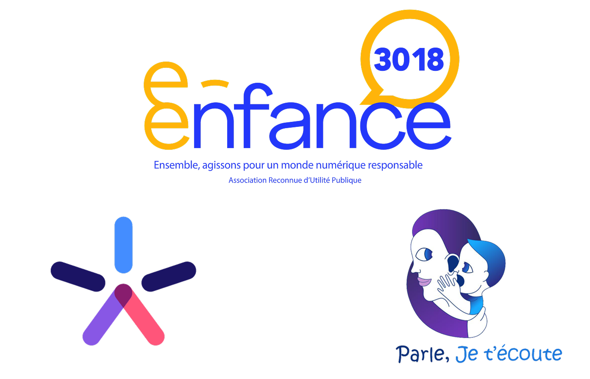

MDR (Morts Du Rire) - ONG anti harcèlement
Ce projet a été réalisé dans le cadre d'une SAÉ (Situation d'Apprentissage Évaluée) du BUT MMI.
En groupe de 8, nous avons dû imaginer une ONG fictive qui lutte contre le harcèlement scolaire et le cyberharcèlement.
Pour cette SAÉ, j'étais chef de projet. J'ai donc dû mobiliser beaucoup de compétences et de ressources pour organiser un groupe aussi grand. Ce n'était pas facile, d'autant que le temps nous été imparti. La première étape a été le benchmark : nous avons étudié 3 ONGs du même domaine, en analysant leurs chartes graphiques et éditoriales.
Logo des associations "e-Enfance", "ABA" et "Parle, je t'écoute"
Nous en avons tiré une conclusion innatendue : la communication des ces ONGs "manque de violence". Nous avons donc décidé de partir à l'opposé exact : montrer la réalité du harcèlement, quitte à mettre en lumière des images violentes.
D'où le nom ; Morts Du Rire : ce qui est une blague pour certain.e.s peut blesser voire tuer la victime.

Logo de MDR
Lors du projet, j'ai appris à gérer une équipe nombreuse et à déleguer des tâches. Pour ce faire, un rétroplanning a été réalisé, ainsi qu'un tableau de bord Trello pour répartir les tâches.
J'ai également participé à la charte graphique, en designant le logo et en trouvant le code couleur adapté. Pour plus de détail, vous pouvez vous réferer à la Charte Graphique de MDR.
Conclusion
À travers cette SAÉ, j'ai gagné en confiance en moi, devant assumer les responsabilités de chef de projet que j'avais choisies. Malgré des difficultés quant au fonctionnement du groupe, le résultat fini est très satisfaisant et m'a permis de comprendre les enjeux du travail en groupe. J'ai également gagné en aisance quant à l'utilisation d'outils comme Illustrator/Photoshop/Affinity.